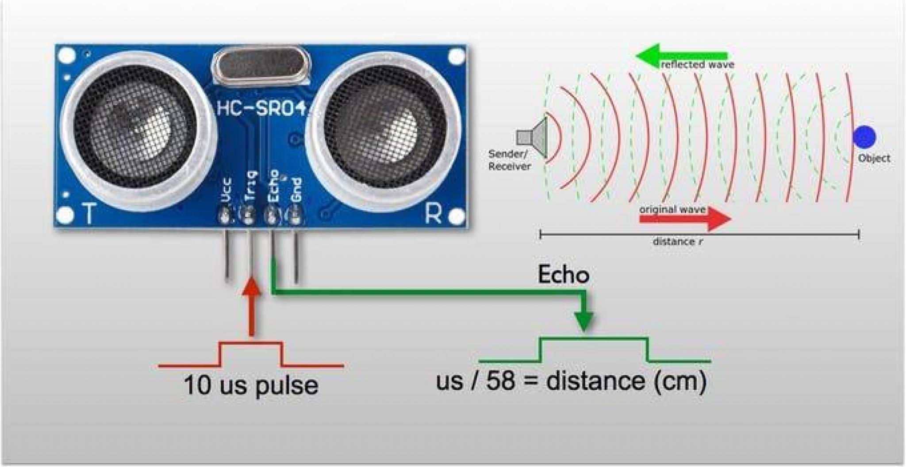
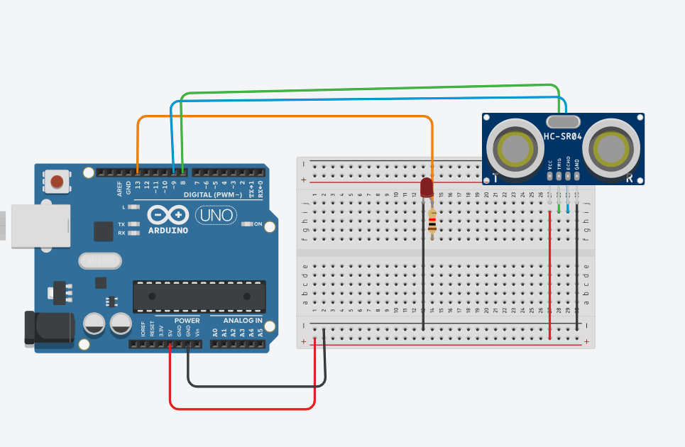
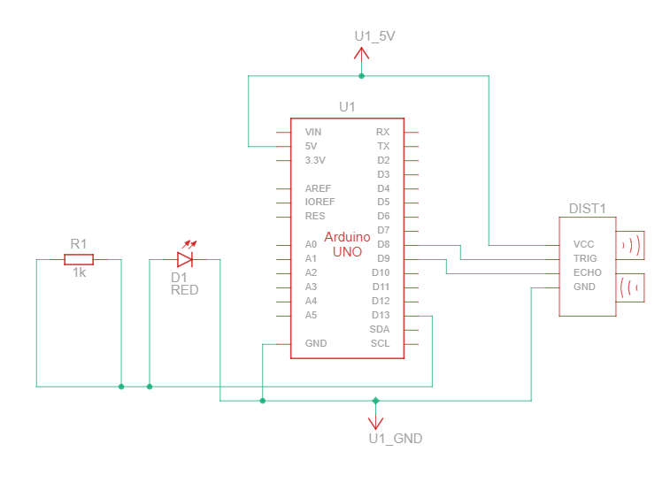
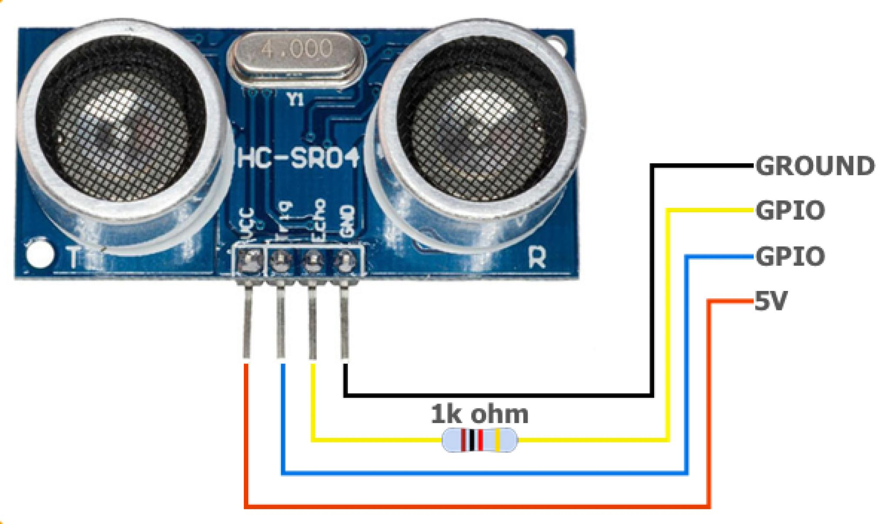

Arduino 02
Sensor de distancia HCSR-04
Objetivos
Conexión de un sensor ultrasónico de distancia
Principio de funcionamiento
El sensor emite pulsos de 40 khz de frecuencia a intervalos de 10 \(\mu s\) enviando un tren de pulsos HIGH a través del pin trigger y espera a recibirlo en el pin Echo. Cuando los pulsos emitidos llegan a un obstáculo, se reflejan, y son luego recibidos por el receptor, el cual generará un pulso alto (HIGH) en la salida (pin Echo) de igual duración que el tiempo transcurrido entre la emisión y la recepción del pulso. Esta duración expresada en microsegundos será accesible através de la función pulseIn(PIN,ESTADO) especificando el PIN y el estado HIGH. En el lado del controlador, la señal recibida debe será convertida a distancia al dividir ese tiempo por 58.2, para obtener los datos en centímetros. Este dato que parece arbitrario se puede calcular sin más que hacer un par de conversiones de unidades al revisar la hoja de datos del componente.
Verificando
Si asumimos la velocidad del sonido en condiciones ambientales normales como 340 m/s, y sabemos que el tiempo registrado por el sensor (en microsegundos) es el que corresponde a el doble de la distancia al obstáculo tenemos que:
\[ 2\cdot d = c\cdot t \]
Propuesta Verifiquen si es correcto el número 58,2 usado como factor de conversión,
que algunas hojas de datos y tutoriales de internet nos dan.

Esquema de conexión
La conexión será como se muestra en la imagen

El mismo circuito pero en la vista tradicional se vería asi

En ocasiones se conecta una resistencia como se muestra en la siguiente imagen

Código
/*
CONEXIÓN DE SENSOR ULTRASÓNICO
*/
int TRIG = 10; // TRIGGER EN PIN 10
int ECO = 9; // ECO EN PIN 9
int LED = 13; // LED INTEGRADO O PIN DEL LED
int DURACION;
int DISTANCIA;
void setup() {
pinMode(LED, OUTPUT); // DEFINICION COMO SALIDA PIN LED
pinMode(ECO, INPUT); // DEFINICION COMO ENTRADA PIN ECHO
pinMode(TRIG, OUTPUT); // DEFINICION COMO SALIDA PIN TRIGGER
Serial.begin(9600); // INCIALIZACIÓN DEL MONITOR SERIE
}
void loop() {
digitalWrite(TRIG, HIGH); // ARRANCAMOS EL SENSOR
delay(1);
digitalWrite(TRIG, LOW);
DURACION = pulseIn(ECO, HIGH);
DISTANCIA = DURACION / 58.2;
// esto esta especificado por el fabricante del sensor
if(DISTANCIA <=20 && DISTANCIA >=0){
digitalWrite(LED,HIGH);
delay(DISTANCIA*10);
digitalWrite(LED, LOW);
}
Serial.println(DISTANCIA);
delay(200);
}Monitor serie de Arduino
Para abrir el monitor serie hacemos herramientas > monitor serie o Ctrl+Shift+M
El puerto serie permite comunicación bidireccional entre Arduino y una computadora:
- Funciones básicas:
Serial.begin(baudrate); // Inicia comunicación (ej: 9600, 115200)
Serial.print(dato); // Envía datos sin salto de línea
Serial.println(dato); // Envía datos con salto de línea- Baud rate: Velocidad de transmisión (bits/segundo). Se puede usar 9600, 115200, etc. para elegir la velocidad de conexión
Para que nuestros datos se “vean” como un csv debemos hacer por ejemplo
- Cada línea = una muestra de temporal del sensor
- Columnas separadas por comas (o punto y coma)
- Primera línea como encabezado (opcional)
Ejemplo de estructura:
tiempo_ms,distancia_cm,temperatura_c
0,15.2,25.3
15,15.1,25.4
30,14.8,25.3Código de ejemplo
void setup() {
Serial.begin(115200); // Alta velocidad para más muestras
// Encabezados CSV (opcional)
Serial.println("tiempo_ms,distancia_cm,temperatura_c");
}
void loop() {
// 1. Leer sensores
unsigned long tiempo = millis(); // unsigned elimina el signo del numero y nos da un bit mas
float distancia = leerSensorDistancia();
float temperatura = leerSensorTemperatura();
// 2. Imprimir en formato CSV
Serial.print(tiempo);
Serial.print(",");
Serial.print(distancia);
Serial.print(",");
Serial.println(temperatura); // println pasa a la siguiente línea luego de esto
delay(10); // Intervalo entre muestras
}Errores comunes y personalización
Manejo de errores de formato:
Se puede usar isnan() para “atajar” valores nulos
// Verificar valores inválidos
if (isnan(distancia)) {
Serial.print(tiempo);
Serial.println(",NaN,"); // Mantener estructura de columnas
} else {
// Impresión normal
}Controlar la precisión decimal
El segundo parámetro de print es la cantidad de decimales
Serial.print(distancia, 2); // 2 decimalesMarca temporal
La función millis() indica los milisegundo desde que la plcaca fue encendida. Es útil para extraer una marca temporal para los valores de nuestros sensores. Una vez que tenemos los datos, con restar a todos el primer valor los “ajustamos a cero” y obtenemos una seriel temporal limpia. Este ajuste puede hacerse directamente en arduino o posteriormente en python
Consejo: Cuanto menos hagamos trabajar al arduino, mejor.
static unsigned long inicio = millis();
Serial.print(millis() - inicio); // Tiempo relativo al experimentoBuenas Prácticas y Solución de Problemas
| Problema Común | Solución |
|---|---|
| Datos incompletos/truncados | Aumentar baud rate (115200) |
| Valores corruptos | Agregar Serial.flush() tras println |
| Pérdida de primeras muestras | Incluir retardo inicial en setup() |
| Desbordamiento del buffer | Reducir frecuencia de muestreo |
| Inconsistencias en columnas | Usar siempre mismo orden en print |
Actividad
Objetivo: Entender funcionamiento de pulseIn()
void setup() {
Serial.begin(9600);
pinMode(9, OUTPUT);
pinMode(10, INPUT);
}
void loop() {
digitalWrite(9, LOW); // Apagar pin
delayMicroseconds(4); // Delay precautorio
digitalWrite(9, HIGH); // Prender el pin: Envío de pulso
delayMicroseconds(10); // Delay especificado por el fabricante
digitalWrite(9, LOW); // Aapagar el pin
long t = pulseIn(10, HIGH); // Obtener el tiempo de viaje
float d_cm = t * 0.034 / 2; // Calcular la distancia
Serial.print("Distancia: ");
Serial.print(d_cm);
Serial.println(" cm");
delay(300);
}Ejercicios:
1. Medir distancia a diferentes objetos
2. Calcular velocidad de objeto móvil: \(v \approx \frac{\Delta d}{\Delta t}\)